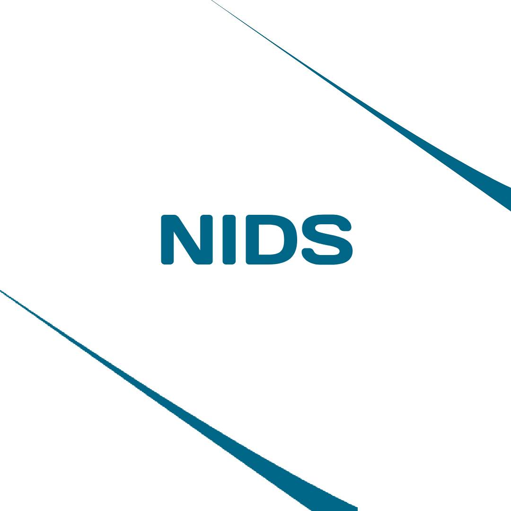

Go · gopacket · Network security
NIDS — Network Intrusion Detection System
Built to get hands-on experience with core networking and cybersecurity concepts. Captures live traffic via gopacket, tracks per-IP behavioral statistics over sliding time windows, and uses threshold-based analysis to flag reconnaissance scans and flooding attacks.
View repo →